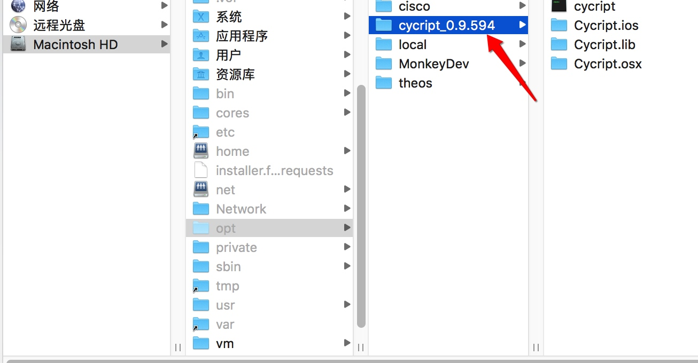

Cycript允许开发人员通过交互式控制台，使用Objective-C ++和JavaScript语法的混合，在iOS或Mac OS X上检测和修改正在运行的应用程序。
1. 安装 cycript
下载 SDK ，将下载好的文件解压到 磁盘/opt目录下
http://www.cycript.org/

2. 配置环境变量
1、 创建或打开 .bash_profile 文件
cd 到当前用户目录下 cd ~ ，执行：
$ vim .bash_profile
2、 增加cycript的绝对路径
export cycript_path="/opt/cycript_0.9.594"
PATH=$PATH:$cycript_path
3、 更新刚配置的环境变量
$ source .bash_profile
此外，打开vim .zshrc 将 .bash_profile 加入 （适用iterm2 zsh组合）source .bash_profile
4、 验证配置是否成功，若终端输出 cy# 表示成功
$ cycript
# cy
3. 使用
1、安装 MonkeyDev 运行app
2、使用Cycript连接到已运行手机上的app
cycript [-c] [-p <pid|name>] [-r <host:port>] [<script> [<arg>...]]
例如：
cycript -r 10.10.3.145
3、 命令语法使用
4. 问题
1、执行$ cycript出现以下情况：
dyld: Library not loaded: /System/Library/Frameworks/Ruby.framework/Versions/2.0/usr/lib/libruby.2.0.0.dylib
Referenced from: /opt/cycript_0.9.594/Cycript.lib/cycript-apl
Reason: image not found
此情况为电脑的 ruby 版本太高 大于 2.0
查看ruby版本 $ ruby -v
解决： 创建Ruby2.0版本文件，并将2.3版本文件拷贝到2.0中
$ sudo mkdir -p /System/Library/Frameworks/Ruby.framework/Versions/2.0/usr/lib/
$ sudo ln -s /System/Library/Frameworks/Ruby.framework/Versions/2.3/usr/lib/libruby.2.3.0.dylib /System/Library/Frameworks/Ruby.framework/Versions/2.0/usr/lib/libruby.2.0.0.dylib
2、sudo mkdir 出现权限问题，关闭SIP,关闭详情请参考 系统完整性保护(SIP)
mkdir: /System/Library/Frameworks/Ruby.framework/Versions/2.0/usr/lib: Operation not permitted